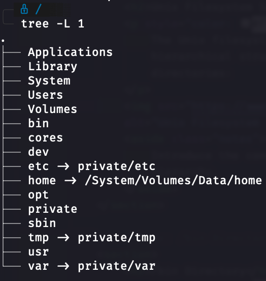

Unix and Bash Scripting
Learn the fundamentals of Unix and Bash scripting with practical examples
Episode 1: What is Unix?
Unix is a powerful, multiuser, multitasking operating system originally developed in the 1970s.
History of Unix
Unix was developed in 1969 at AT&T's Bell Labs by Ken Thompson, Dennis Ritchie, and others. It was initially created as a simple, multi-tasking system for programmers.
Evolution of Unix
Over the years, Unix evolved into a powerful operating system that became the foundation for many others, including Linux and macOS.
Key Milestones in Unix History
- 1971: First version of Unix released.
- 1973: Unix rewritten in the C programming language, enhancing portability.
- 1980s: Various Unix versions developed, including BSD and System V.
- 1991: Linux, a Unix-like operating system, is released by Linus Torvalds.
- 2000s: Unix systems become widely used in servers and enterprise environments.
Unix History: Documentaries & References
Learn more about Unix history through these classic documentaries:
- "The UNIX System: Making Computers More Productive" (1982) - AT&T Bell Laboratories documentary
- "The Computer Chronicles: UNIX (1985)" - In-depth look at Unix systems
Unix Architecture
Unix architecture consists of several components, including the kernel, shell, and file system.

Unix Filesystem Structure
The Unix filesystem is organized in a hierarchical structure, starting from the root (/) directory.
Root Directory (/)
The root directory (/) is the top-level directory in Unix systems.
- All other directories branch from the root
- Absolute paths always start from root (/)
- Contains essential system directories
Applications and Library
- /Applications - Contains user applications
- /Library - System-wide libraries and support files
# Common paths
/Applications/ # User applications
/Library/ # System libraries
/Library/Frameworks/ # System frameworksSystem Directory
- /System - Core system components
- Contains essential OS files
- Rarely modified directly
# System directory structure
/System/
├── Library/
└── Volumes/Users and Volumes
- /Users - Home directories for all users
- /Volumes - Mount point for other filesystems
# Directory structure
/Users/
├── username/
│ ├── Documents/
│ └── Desktop/
/Volumes/
├── ExternalDrive/
└── NetworkShare/Core System Binaries
- /bin - Essential command binaries
- /sbin - System binaries
- /cores - Core dumps
# Essential commands location
/bin/ls # List directory contents
/bin/cp # Copy files
/bin/mv # Move files
/sbin/mount # Mount filesystemsSystem Configuration
- /etc - System configuration files
- /private/etc - Actual location of system configs
- /dev - Device files
# Important configuration files
/etc/
├── passwd # User accounts
├── hosts # Host name resolution
└── ssh/ # SSH configurationVariable Data
- /var - Variable data files
- /tmp - Temporary files
- /private/var - Actual variable data location
# Common variable data
/var/
├── log/ # System logs
├── mail/ # Mail data
└── spool/ # Print queuesFile Types in Unix
Unix treats everything as a file and supports various file types:
- Regular Files (-)
- Directories (d)
- Symbolic Links (l)
- Block Special Files (b)
- Character Special Files (c)
- Named Pipes (p)
- Socket Files (s)
Regular Files (-)
Most common file type, containing data in various formats:
- Text files
- Binary files
- Shell scripts
# Example of regular files
-rw-r--r-- 1 user group 2048 Jan 20 14:30 document.txt
-rwxr-xr-x 1 user group 8390 Jan 20 14:35 script.sh
-rw-r--r-- 1 user group 1024 Jan 20 14:40 image.jpgDirectories (d)
Special files that contain other files and directories:
# Directory listing
drwxr-xr-x 2 user group 4096 Jan 20 14:45 Documents/
drwxr-xr-x 4 user group 4096 Jan 20 14:50 Projects/
# Common directory operations
ls -la # List directory contents
mkdir dir # Create directory
rmdir dir # Remove empty directory
rm -r dir # Remove directory and contentsSymbolic Links (l)
Special files that point to other files or directories:
# Symbolic link example
lrwxrwxrwx 1 user group 15 Jan 20 15:00 link -> target
# Creating symbolic links
ln -s target link # Create symbolic link
ls -l link # View link details
readlink link # Show link targetBlock Special Files (b)
Used for block-oriented devices:
# Block device examples
brw-rw---- 1 root disk 8, 0 Jan 20 15:10 /dev/sda # Hard drive
brw-rw---- 1 root disk 8, 1 Jan 20 15:10 /dev/sda1 # Partition
# Common characteristics:
- Fixed size blocks
- Random access
- Buffered I/O
- Used for storage devicesCharacter Special Files (c)
Used for character-oriented devices:
# Character device examples
crw-rw-rw- 1 root root 1, 3 Jan 20 15:15 /dev/null # Null device
crw-rw---- 1 root tty 4, 0 Jan 20 15:15 /dev/tty0 # Terminal
# Common characteristics:
- Character stream
- Sequential access
- Unbuffered I/O
- Used for terminals and printersNamed Pipes (p)
Special files for inter-process communication:
# Named pipe example
prw-r--r-- 1 user group 0 Jan 20 15:20 mypipe
# Creating and using named pipes
mkfifo mypipe # Create named pipe
ls -l mypipe # View pipe details
echo "Hello" > mypipe & # Write to pipe
cat < mypipe # Read from pipeSocket Files (s)
Used for network and inter-process communication:
# Socket file example
srw-rw---- 1 user group 0 Jan 20 15:25 /tmp/mysql.sock
# Common socket locations
/var/run/*.sock # System service sockets
/tmp/*.sock # Temporary sockets
# Characteristics:
- Bidirectional communication
- Used by network services
- Local IPC mechanismEssential Unix Commands
# File Operations
ls -la # List all files with details
cp -r src dst # Copy recursively
mv old new # Move/rename files
rm -rf dir # Remove recursively
# Navigation
pwd # Print working directory
cd - # Go to previous directory
pushd /path # Push directory to stack
popd # Pop directory from stackWorking with File Contents
# Viewing files
cat file.txt # Display entire file
less file.txt # Page through file
head -n 5 # Show first 5 lines
tail -f log # Follow file updates
# Searching content
grep pattern file # Search for pattern
find . -name "*.txt" # Find files by name
locate filename # Quick file searchText Processing Basics
# Basic text manipulation
cut -d',' -f1 file.csv # Extract first column
sort -n numbers.txt # Sort numerically
uniq -c # Count unique lines
wc -l file.txt # Count lines
# Text streams
echo "hello" | tr a-z A-Z # Convert to uppercase
cat file.txt | grep error | sort | uniqBash Script Structure
#!/bin/bash
# Script description
# Author: Your NameVariables and Data Types
# String variables
name="John"
greeting="Hello, $name!"
# Numeric operations
count=5
((count++))
result=$((5 + 3))
# Arrays
fruits=("apple" "banana" "orange")
echo "${fruits[0]}" # First element
echo "${fruits[@]}" # All elements
echo "${/#fruits[@]}" # Array length
Control Flow Fundamentals
# If statements with file tests
if [ -f "$file" ]; then
echo "File exists"
elif [ -d "$file" ]; then
echo "It's a directory"
else
echo "Not found"
fi
# Case statements
case "$option" in
start)
start_service
;;
stop)
stop_service
;;
*)
echo "Invalid option"
;;
esacLoop Structures in Bash
# For loops
for file in *.txt; do
echo "Processing $file"
done
# While loops with read
while IFS= read -r line; do
echo "Line: $line"
done < input.txt
# Until loops
count=0
until [ $count -ge 5 ]; do
echo $count
((count++))
doneThe ls Command
# List files and directories
ls # Basic listing
ls -l # Detailed listing
ls -a # Show hidden files
ls -lh # Human-readable sizes
ls -R # Recursive listingExercise: ls Command
Complete these tasks:
- List all files, including hidden ones, in your home directory
- Show files with their sizes in human-readable format
- List files sorted by modification time
- Show only directories
Sample solutions:
ls -la ~
ls -lh
ls -lt
ls -d */The cd Command
# Change directory
cd /path/to/dir # Go to specific directory
cd # Go to home directory
cd .. # Go up one level
cd - # Go to previous directory
cd ~/Documents # Go to Documents in homeExercise: cd Command
Navigate through the filesystem:
- Go to your home directory
- Navigate to /etc and then back to previous location
- Go up two directory levels using relative paths
- Navigate to a deeply nested directory using absolute path
Sample solutions:
cd ~
cd /etc && cd -
cd ../..
cd /var/log/apache2The pwd Command
# Print Working Directory
pwd # Show current directory
pwd -P # Show physical path (resolve symlinks)
pwd -L # Show logical pathExercise: pwd Command
Working with pwd:
- Create a symbolic link and navigate to it
- Show both logical and physical paths
- Use pwd in a script to verify location
Sample solutions:
ln -s /var/log logs
cd logs
pwd -P
pwd -LThe mkdir Command
# Make Directory
mkdir docs # Create single directory
mkdir -p a/b/c # Create parent directories
mkdir -m 755 secure_dir # Create with specific permissions
mkdir dir1 dir2 dir3 # Create multiple directoriesExercise: mkdir Command
Directory Creation Tasks:
- Create a directory structure for a web project
- Create multiple directories with specific permissions
- Create nested directories in one command
Sample solutions:
mkdir -p project/{src,dist,docs}
mkdir -m 700 secure_data
mkdir -p ~/projects/web/{css,js,images}The cp Command
# Copy files and directories
cp file1 file2 # Copy file
cp -r dir1 dir2 # Copy directory recursively
cp -p file1 file2 # Preserve permissions
cp -i file1 file2 # Interactive modeExercise: cp Command
Copy Operations:
- Copy multiple files to a directory
- Copy a directory structure preserving attributes
- Create a backup copy with timestamp
Sample solutions:
cp *.txt backup/
cp -rp project/ project_backup/
cp file.txt file.txt.$(date +%Y%m%d)The mv Command
# Move or rename files
mv file1 file2 # Rename file
mv file dir/ # Move file to directory
mv -i file1 file2 # Interactive mode
mv -n file1 file2 # No overwriteExercise: mv Command
Move and Rename Tasks:
- Organize files by extension into directories
- Rename files with a pattern
- Move files safely without overwriting
Sample solutions:
for ext in jpg png pdf; do
mv *.$ext ${ext}_files/
done
mv project{,-old}
mv -n *.log backup/The rm Command
# Remove files and directories
rm file # Remove file
rm -r directory # Remove directory recursively
rm -f file # Force remove
rm -i file # Interactive modeExercise: rm Command
Removal Operations:
- Remove files matching a pattern
- Clean up empty directories
- Safely remove files with confirmation
Sample solutions:
rm *.tmp
find . -type d -empty -delete
rm -i *.logThe touch Command
# Create an empty file or update timestamp
touch file.txt # Create a new file
touch existing_file.txt # Update timestamp of existing file
touch -d "2023-01-01" file.txt # Set specific timestampExercise: touch Command
File Creation Tasks:
- Create multiple empty files at once
- Update the timestamp of a file
- Set a specific timestamp for a file
Sample solutions:
touch file1.txt file2.txt file3.txt
touch -d "2023-01-01" file1.txtThe cat Command
# Concatenate and display files
cat file.txt # Display file content
cat file1.txt file2.txt # Concatenate files
cat > newfile.txt # Create a new file from stdinExercise: cat Command
File Display Tasks:
- Display the contents of a file
- Concatenate two files into a new file
- Create a new file using cat
Sample solutions:
cat myfile.txt
cat file1.txt file2.txt > combined.txt
cat > newfile.txtThe less Command
# View file contents page by page
less file.txt # View file
less +G file.txt # Start at the end of the file
less -N file.txt # Show line numbersExercise: less Command
File Navigation Tasks:
- Open a large log file and search for a specific term
- Navigate to the end of the file
- Display line numbers while viewing
Sample solutions:
less /var/log/syslog
less +G /var/log/syslog
less -N /var/log/syslogThe head Command
# Display the first lines of a file
head file.txt # First 10 lines
head -n 5 file.txt # First 5 lines
head -c 20 file.txt # First 20 bytesExercise: head Command
File Preview Tasks:
- Display the first 15 lines of a file
- Show the first 100 bytes of a file
Sample solutions:
head -n 15 myfile.txt
head -c 100 myfile.txtThe tail Command
# Display the last lines of a file
tail file.txt # Last 10 lines
tail -n 5 file.txt # Last 5 lines
tail -f log.txt # Follow log file updatesExercise: tail Command
File Monitoring Tasks:
- Display the last 20 lines of a file
- Monitor a log file for new entries
Sample solutions:
tail -n 20 myfile.txt
tail -f /var/log/syslogThe grep Command
# Search for patterns in files
grep "error" file.txt # Search for 'error'
grep -i "error" file.txt # Case-insensitive search
grep -r "pattern" /path # Recursive search in directoryExercise: grep Command
Search Tasks:
- Find all occurrences of a word in a file
- Search for a pattern in all text files in a directory
Sample solutions:
grep "word" myfile.txt
grep -r "pattern" /path/to/directory/*.txtThe find Command
# Search for files in a directory hierarchy
find /path -name "*.txt" # Find by name
find /path -type f -size +1M # Find files larger than 1MB
find /path -mtime -7 # Find files modified in the last 7 daysExercise: find Command
File Searching Tasks:
- Find all .log files in a directory
- Find files modified in the last 24 hours
Sample solutions:
find /var/log -name "*.log"
find /path -mtime -1The chmod Command
# Change file permissions
chmod 755 file.txt # Set rwxr-xr-x
chmod u+x script.sh # Add execute permission for user
chmod -R 700 /path/to/dir # Recursively set permissionsExercise: chmod Command
Permission Tasks:
- Change permissions of a file to read-only for others
- Set executable permissions for a script
Sample solutions:
chmod 444 myfile.txt
chmod +x myscript.shThe chown Command
# Change file owner and group
chown user:group file.txt # Change owner and group
chown -R user:group /path/to/dir # Recursively change ownershipExercise: chown Command
Ownership Tasks:
- Change ownership of a file to a specific user
- Recursively change ownership of a directory
Sample solutions:
chown newuser file.txt
chown -R newuser:newgroup /path/to/dirThe tar Command
# Archive files
tar -cvf archive.tar /path/to/dir # Create an archive
tar -xvf archive.tar # Extract an archive
tar -czvf archive.tar.gz /path/to/dir # Create a compressed archiveExercise: tar Command
Archiving Tasks:
- Create a tar archive of a directory
- Extract files from a tar archive
Sample solutions:
tar -cvf myarchive.tar /path/to/dir
tar -xvf myarchive.tarThe gzip Command
# Compress files
gzip file.txt # Compress file
gunzip file.txt.gz # Decompress file
gzip -k file.txt # Keep original fileExercise: gzip Command
Compression Tasks:
- Compress multiple files at once
- Decompress a gzipped file
Sample solutions:
gzip *.txt
gunzip file.txt.gzExample Command
echo "${/#variable}"
Unix Kernel
The kernel is the core of the Unix operating system, responsible for:
- Process Management
- Memory Management
- Device Management
- System Calls
Shell Types in Unix
# Common Unix shells
/bin/sh - Bourne Shell (sh)
/bin/bash - Bourne Again Shell (bash)
/bin/zsh - Z Shell (zsh)
/bin/csh - C Shell (csh)
/bin/tcsh - Enhanced C Shell (tcsh)Special Permissions
# SUID, SGID, and Sticky Bit
chmod u+s file # Set SUID
chmod g+s dir # Set SGID
chmod +t dir # Set Sticky Bit
# Numeric notation
chmod 4755 file # SUID with rwxr-xr-x
chmod 2755 dir # SGID with rwxr-xr-x
chmod 1777 dir # Sticky bit with rwxrwxrwxEnvironment Variables
# Common environment variables
echo $PATH # Executable search path
echo $HOME # User's home directory
echo $USER # Current username
echo $SHELL # Current shell path
# Setting environment variables
export MY_VAR="value"
PATH=$PATH:/new/pathAdvanced Control Flow
# Using && and ||
command1 && command2 # Run command2 if command1 succeeds
command1 || command2 # Run command2 if command1 fails
# Using select for menus
select option in "Start" "Stop" "Restart" "Exit"; do
case $option in
"Start") start_service ;;
"Stop") stop_service ;;
"Restart") restart_service ;;
"Exit") break ;;
esac
done